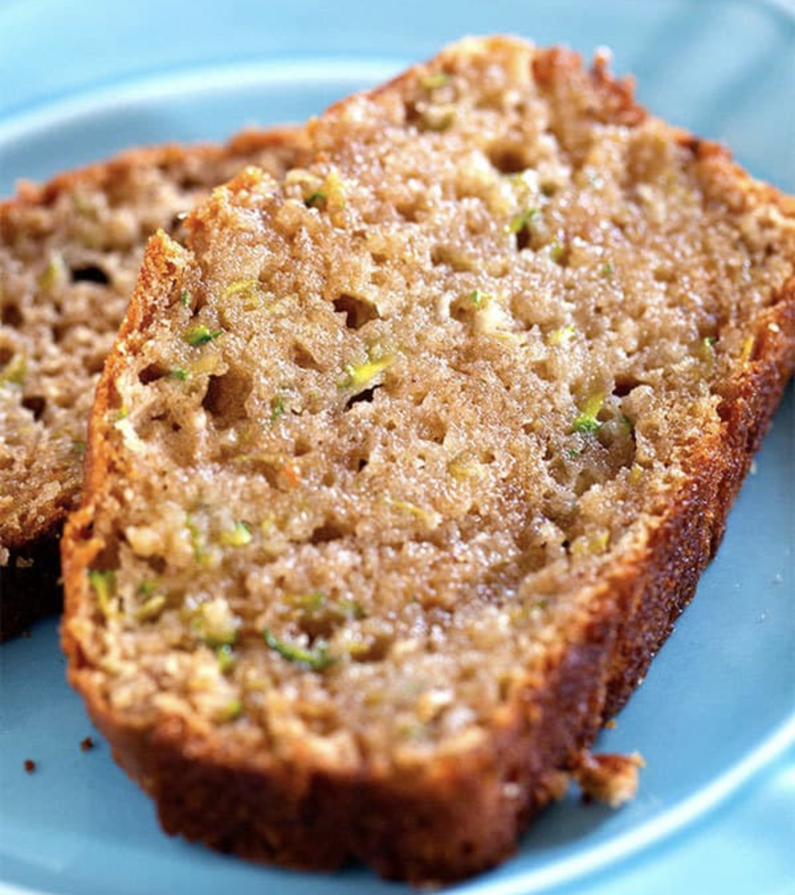

Classic Zucchini Bread

Description
This zucchini bread recipe is wonderfully moist, and sweet with lots of zucchini. Top it off with some butter and you'll have yourself a delicious and easy breakfast.
Ingredients
- 1 1/2 cups grated zucchini - lightly packed
- 1 cup granulated sugar
- 1/4 cup packed light brown sugar
- 1/2 cup unsweetened applesauce
- 1/3 cup vegetable oil
- 2 large eggs
- 1 teaspoon vanilla extract
- 1 1/2 cups all purpose flour
- 1/2 teaspoon baking powder
- 1/2 teaspoon baking soda
- 1/2 teaspoon salt
- 1/2 teaspoon ground cinnamon
Steps
- Preheat oven to 350 degrees F. Spray a 9x5 inch loaf pan with cooking spray.
- In a large bowl, add the grated zucchini, sugar, brown sugar, applesauce, oil, eggs, and vanilla. Whisk until well combined.
- Add the flour, baking powder, baking soda, salt, and cinnamon. Stir just until no dry flour retains, trying not to over mix.
- Pour the batter into the loaf pan. Bake for 50 to 54 minutes. A toothpick inserted into the centre of the bread should come out with moist crumbs on it.
- Cool in the pan for 10 minutes. Remove from the pan and transfer to a wire cooling rack to cool completely before slicing.
- Store covered in the refrigerator.